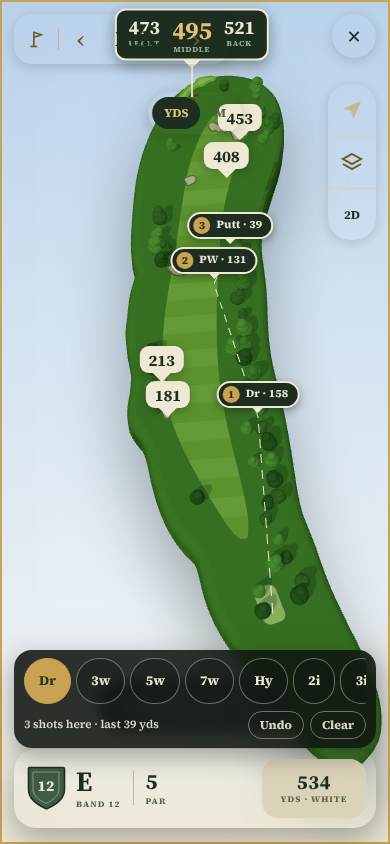

Your shots on this hole, every time you have played it
The Driving Zone idea. Today's shots in gold, the rounds before in cream and sage.
Now · from the bookLeatherhead, the 8th

Three shots, this round only: driver 158, pitching wedge 131, a putt of 39. The track is drawn and the yards are counted. When the round is posted, it is gone. Nothing remembers that you have stood on this tee eleven times.
Could be · a sketchsame hole, four rounds
todaylast 3
older · 7 tee shots · you miss it right
The same hole, with every tee shot you have ever tapped on it. Seven here, and the pattern says what no table would: you miss this one right. Tap a ball to see which round it was.